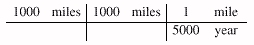
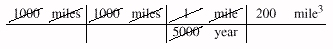
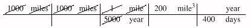
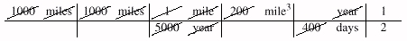

These reminders can be helpful in making back-of-the-envelope calculations.
Two Answers Are Better Than One.
When I asked Peter Weinberger how much water flows out of
the Mississippi per day,
he responded, ``As much as flows in.''
He then estimated that the Mississippi basin
was about 1000 by 1000 miles,
and that the annual runoff from rainfall
there was about one foot
(or one five-thousandth of a mile).
That gives
1000 miles * 1000 miles * 1/5000 mile/year
~
200 miles3/year
(200 miles3/year) / (400 days/year)
~
1/2 mile3/day
or a little more than half a cubic mile per day.
It's important to double check all calculations,
and especially so for quick ones.
As a cheating triple check,
an almanac reported that the river's
discharge is 640,000 cubic feet per second.
Working from that gives
640,000ft3/sec * 3600 secs/hr
~
2.3x109ft3 / hr
2.3x109ft3/hr * 24hrs/day
~
6x1010ft3/day
6x1010ft3/day / (5000ft/mile)3
~
6x1010ft3/day /
(125x109ft3/mile3)
~
60/125 mile3/day
~
1/2 mile3/day
The proximity of the two estimates to one another,
and especially to the almanac's answer,
is a fine example of sheer dumb luck.
Quick Checks.
Polya devotes three pages of his
How to Solve It
to ``Test by Dimension'', which he describes as a
``well-known, quick and efficient means to check
geometrical or physical formulas''.
The first rule is that the dimensions in a sum must be the same,
which is in turn the dimension of the sum -- you
can add feet together to get feet,
but you can't add seconds to pounds.
The second rule is that the dimension of a product is the
product of the dimensions.
The examples above obey both rules;
multiplying
(miles + miles) x miles x miles / day
~
miles3/day
has the right form, apart from any constants.
A simple table can help you keep track of dimensions
in complicated expressions like those above.
To perform Weinberger's calculation,
we first write down the three original factors.

Next we simplify the expression by cancelling terms,
which shows that the output is 200 miles3/year.

Now we multiply by the identity (well, almost)
that there are 400 days per year.

Cancellation yields the (by now familiar)
answer of half a cubic mile per day.

These tabular calculations help you keep track of dimensions.
Dimension tests check the form of equations.
Check your multiplications and divisions with an old
trick from slide rule days:
independently compute the leading digit and the exponent.
One can make several quick checks for addition.
The first sum has too few digits and the second sum errs
in the least significant digit.
The technique of ``casting out nines''
reveals the error in the third example:
the digits in the summands sum to 8 modulo 9,
while those in the answer sum to 7 modulo 9.
In a correct addition, the sums of the digits
are equal after ``casting out'' groups of digits
that sum to nine.
3142 3142 3142
2718 2718 2718
+1123 +1123 +1123
983 6982 6973
Above all, don't forget common sense: be suspicious of any calculations that show that the Mississippi River discharges 100 gallons of water per day.
Rules of Thumb. I first learned the ``Rule of 72'' in a course on accounting. Assume that you invest a sum of money for y years at an interest rate of r percent per year. The financial version of the rule says that if r times y = 72, then your money will roughly double. The approximation is quite accurate: investing $1000 at 6 percent interest for 12 years gives $2,012, and $1000 at 8 percent for 9 years gives $1,999.
The Rule of 72 is handy for estimating the growth of any exponential process. If a bacterial colony in a dish grows at the rate of three percent per hour, then it doubles in size every day. And doubling brings programmers back to familiar rules of thumb: because 210=1024, ten doublings is about a thousand, twenty doublings is about a million, and thirty doublings is about a billion.
Suppose that an exponential program takes ten seconds to solve a problem of size n=40, and that increasing n by one increases the run time by 12 percent (we probably learned this by plotting its growth on a logarithmic scale). The Rule of 72 tells us that the run time doubles when n increases by 6, or goes up by a factor of about 1000 when n increases by 60. When n=100, the program should therefore take about 10,000 seconds, or a few hours. But what happens when n increases to 160, and the time rises to 107 seconds? How much time is that?
You might find it hard to memorize that there are
3.155x107 seconds in a year.
On the other hand, it is hard to forget
Tom Duff's handy rule of thumb that,
to within half a percent,
Pi seconds is a nanocentury.
Because the exponential program takes 107 seconds,
we should be prepared to wait about four months.
Practice. As with many activities, your estimation skills can only be improved with practice. Try the problems at the end of this column, and the estimation quiz in Appendix 2 (a similar quiz once gave me a much-needed dose of humility about my estimation prowess). Section 7.8 describes quick calculations in everyday life. Most workplaces provide ample opportunities for back-of-the-envelope estimates. How many foam ``packing peanuts'' came in that box? How much time do people at your facility spend waiting in line every day, for morning coffee, lunch, photocopiers and the like? How much does that cost the company in (loaded) salary? And the next time you're really bored at the lunch table, ask your colleagues how much water flows out of the Mississippi River each day.
Next: Section 7.2. Performance Estimates.
Copyright © 1999 Lucent Technologies. All rights reserved. Sun 15 Aug 1999